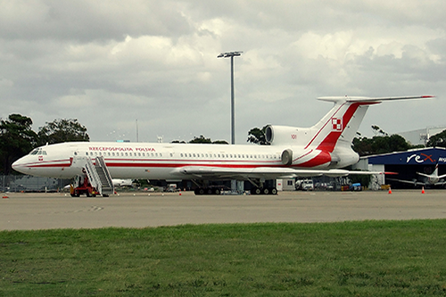

W 2013 roku w aktywnej służbie cywilnej i wojskowej pozostało 118 samolotów Tu-154 na 921 wyprodukowanych; przeciętny wiek maszyn pozostających w aktywnej służbie wynosił 24 lata. Samoloty Tu-154 zostały wycofane z PLL LOT w 1996 roku, ale dwie maszyny typu Tu-154M Lux pozostawały na wyposażeniu 36 Specjalnego Pułku Lotnictwa Transportowego jako samoloty do przewozu władz państwowych. Po katastrofie lotniczej pod Smoleńskiem, kolejną wycofano z użycia w 2011 roku.
W połowie lat sześćdziesiątych XX w. zdecydowano o zastąpieniu latających w barwach Aerofłotu odrzutowych Tu-104 oraz turbośmigłowych An-10, An-12 i Ił-18 nową konstrukcją, zdolną do korzystania z dotychczasowej infrastruktury. O opracowaniu nowego typu samolotu zdecydował osobiście Nikita Chruszczow. Budowę samolotu powierzono biuru konstrukcyjnemu Tupolewa. Prowadzili ją kolejno Siegiej Jegerow i Dmitirij Markowow.
| Masa | 11 200 kg |
| Prędkość | 1225 km/h |
| Rozpiętość | 37,55 m |
| Długość | 47,9 m |
| Data oblotu | 1968 rok |
| Egzemplarze | 1025 |
| Wypadki | 110 |